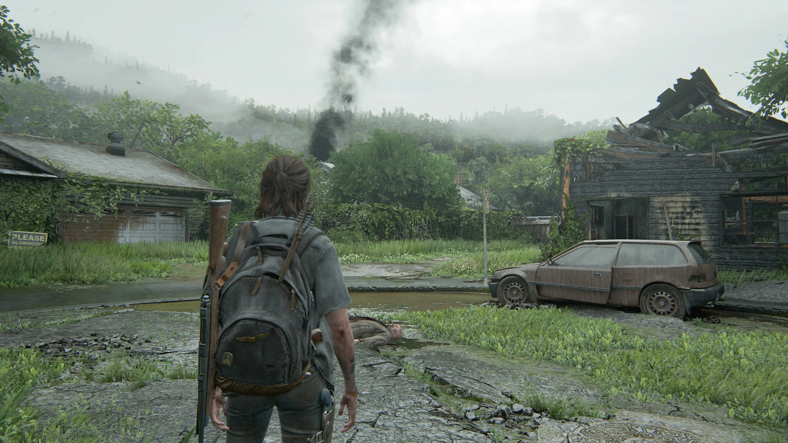
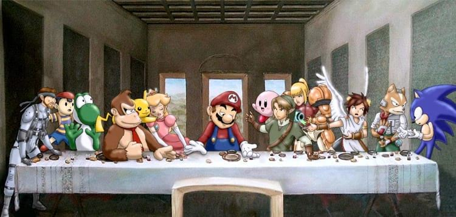
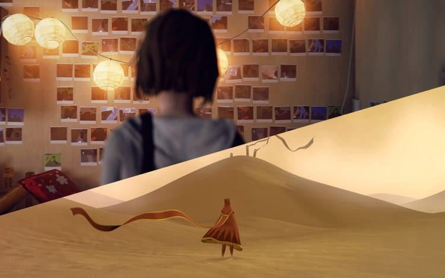

Arte nos Jogos
A questão é polêmica, divide opiniões e praticamente todo jogador que se preze já deve ter se questionado sobre o fato de um título ser ou não considerado uma obra de arte. Afinal, como não valorizar jogos que marcaram gerações e ficaram na memória de milhares de pessoas?
Gráficos de The Last Of Us 2, lançado em 19 de junho de 2020
Mas afinal, o que é "arte"?
A definição da arte ainda é algo extremamente difícil de entender, afinal, são justamente especialistas e sua representação que costumam classificar o quão artística uma obra pode ser. Um conceito muito utilizado para gerar esta avaliação é o definido pelo crítico cultural, filósofo e sociólogo Walter Benjamin: o "Hic et Nunc" (Aqui e Agora), no qual ele expressa o quão necessário é vermos uma obra de arte pessoalmente em uma exposição ou local de exibição natural, mas, como podemos encaixar os jogos nisto? Não há como, pois não existe um cinema, um teatro ou uma exposição para jogarmos.
A Santa Ceia versão jogos
Entendo perfeitamente pessoas que pensam que jogos são feitos apenas para entreter ou gerar um ambiente de competitividade, isto mostra o quão presas elas são a uma cultura de preconceitos sobre outras formas de expressão que não estão familiarizadas, inclusive, é bem provável que muitos que pensam assim conheçam apenas gêneros de jogos como estratégia, plataforma, MOBA, shooters competitivos e outros que não costumam investir na elaboração de um enredo mais bem estruturado.
Estes jogos que costumam investir no desenvolvimento de um enredo mais filosófico geralmente não recebem um espaço considerável na indústria dos videogames porque obviamente não vendem tanto, então são muito ligados à categoria "Indie", na qual ficam os jogos independentes. Acredito que os dois melhores exemplos que posso utilizar aqui são Journey e Life Is Strange, que tiveram a sorte de terem os seus projetos acolhidos por grandes produtoras e, por isto, são conhecidos por uma parcela maior de jogadores.
